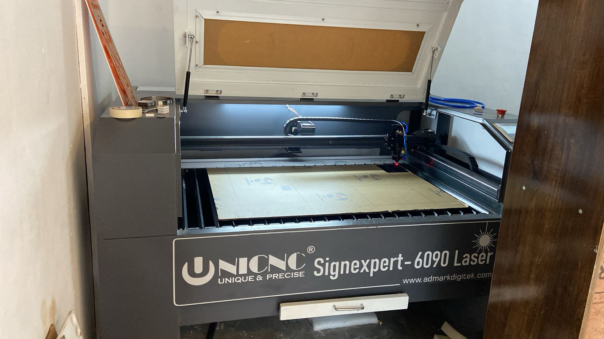

The CNC Laser 2x3 machine is designed for space-conscious users who need precision and versatility. Its compact size makes it ideal for hobbyists, small businesses, and educational institutions working with materials such as acrylic, wood, leather, and paper. Despite its smaller footprint, it delivers sharp detailing, clean edges, and consistent results for small-format cutting and engraving applications.

| Model | Cutting Area | Print Size |
|---|---|---|
| 6090 | 600MM X 900MM (2 * 3) | 2' x 3' |
A CNC Laser 2x3 machine is used for precision cutting and engraving on materials like acrylic, MDF, wood, leather, and paper for signage, crafts, and small-scale production work.
This machine can process acrylic sheets, MDF boards, wood, leather, rubber, fabric, and other non-metal materials commonly used in engraving and cutting applications.
The CNC Laser 2x3 machine offers accurate cutting, smooth engraving, fast performance, low material wastage, and compact design suitable for small businesses and workshops.
Yes, it is widely used for acrylic signboards, nameplates, decorative items, LED signage, and customized engraving applications.
You should select the machine based on cutting area, laser power, material compatibility, engraving speed, and your production requirements.